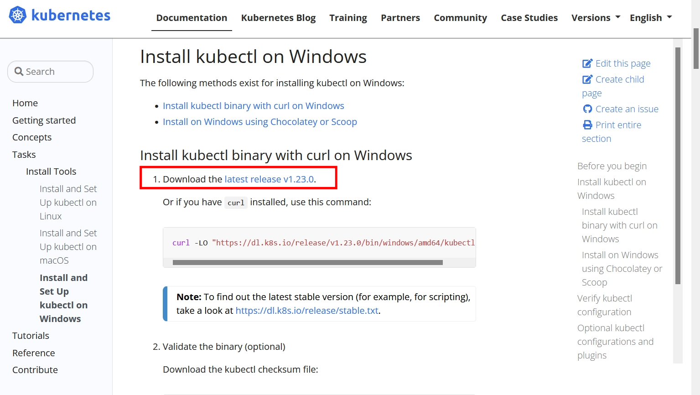
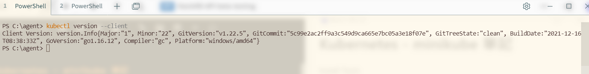
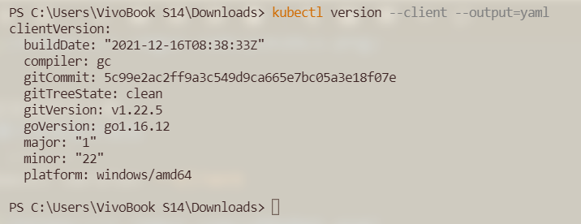
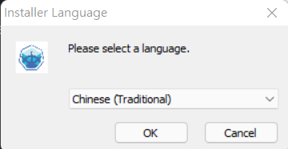
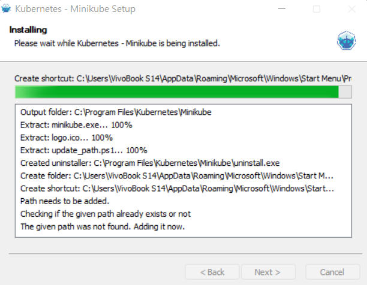
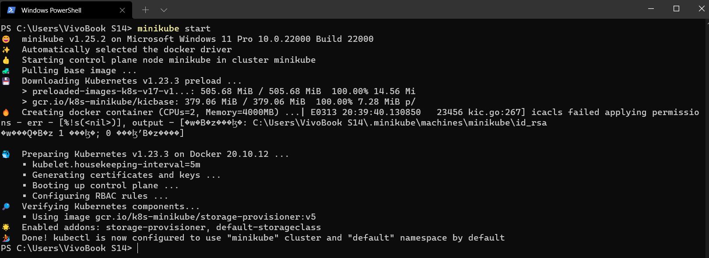
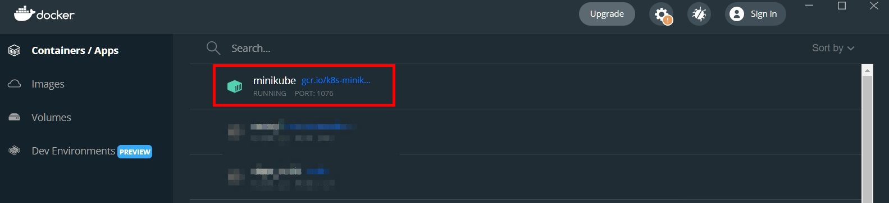
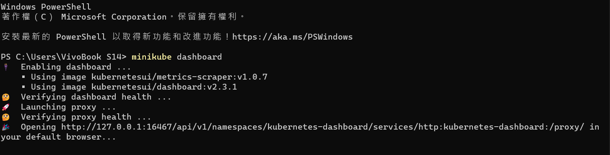
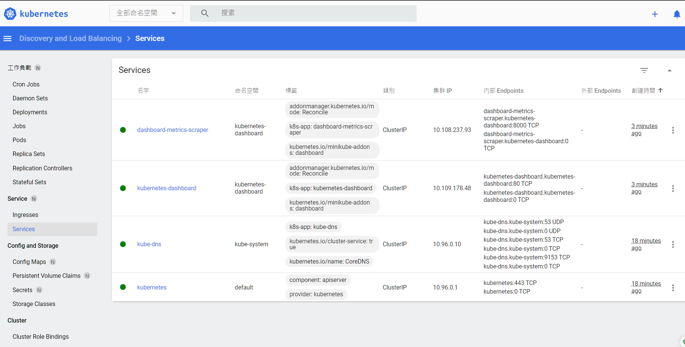
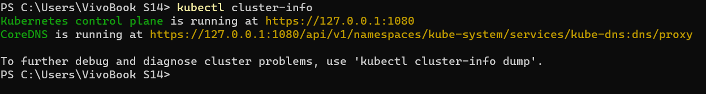

Kubernetes - minikube安裝Windows環境
2023-08-27 07:20:00
2023-08-27 07:20:00
Install Tools：https://kubernetes.io/docs/tasks/tools/
minikube start：https://minikube.sigs.k8s.io/docs/start/
系統需求可參考：https://minikube.sigs.k8s.io/docs/start/#what-youll-need
minikube GitHub： https://github.com/kubernetes/minikube
Install Docker Desktop on Windows：https://docs.docker.com/desktop/windows/install/
安裝使用環境
- Windows 11 Pro 10.0.22000 Build 22000
- Docker
安裝順序
- kubectl
- minikube
Windows 安裝 kubectl
https://kubernetes.io/docs/tasks/tools/install-kubectl-windows/
下載 kubectl.exe 並執行安裝，不使用執行curl操作安裝方式。

測試安裝是否正確
- 顯示安裝版本資訊
kubectl version --client

- 顯示安裝版本資訊(詳細)
kubectl version --client --output=yaml

Windows 安裝 minikube
GitHub Release，下載 minikube-installer.exe 並執行安裝 https://github.com/kubernetes/minikube/releases


執行啟動
開啟PowerShell進行以下操作
minikube start

在此階段會設定必要配置與下載執行啟動必要相關套件。

啟動完成後，打開Docker Desktop可以看到minikube容器運行中。

運行 minikube dashboard
minikube dashboard

預設會自動開啟瀏覽器瀏覽頁面

如果不要預設自動開啟瀏覽器，可加上--url參數
minikube dashboard --url
使用kubectl指令可查看當前cluster資訊
kubectl cluster-info
